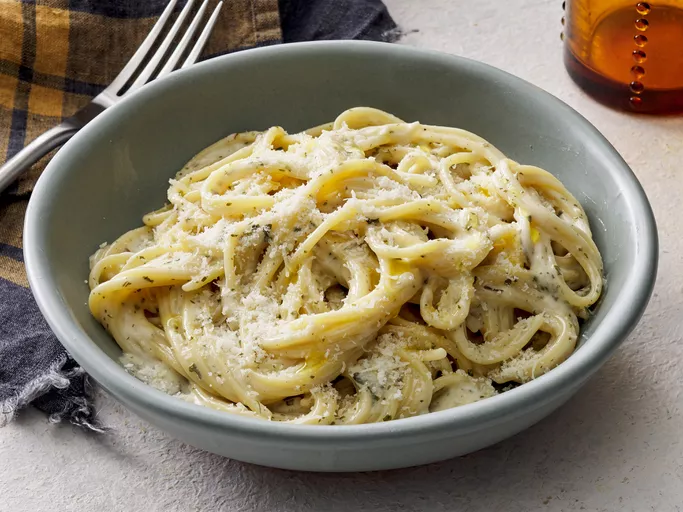

Creamy Garlic Pasta

Description:
Creamy garlic pasta is a rich and comforting meal made with pasta, garlic,
milk, and cream. It is easy to make and perfect for lunch or dinner.
Ingredients:
- 250g pasta
- 3 cloves garlic, minced
- 1 tablespoon butter
- 1 cup milk
- 1/2 cup cooking cream
- 1/2 cup grated cheese
- Salt to taste
- Black pepper to taste
- Fresh parsley, chopped
Steps:
- Boil the pasta in salted water until soft.
- Drain the pasta and set it aside.
- Melt butter in a pan over medium heat.
- Add minced garlic and cook for about 1 minute.
- Add milk and cooking cream, then stir well.
- Add grated cheese and stir until the sauce becomes creamy.
- Season with salt and black pepper.
- Add the cooked pasta and mix until fully coated.
- Garnish with parsley and serve warm.
Main menu